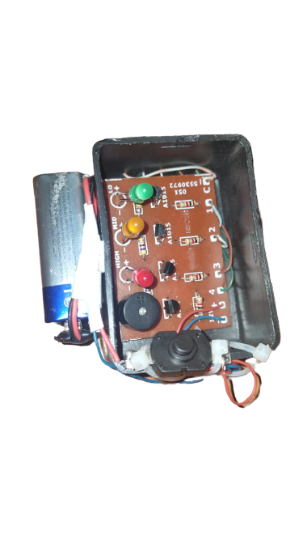
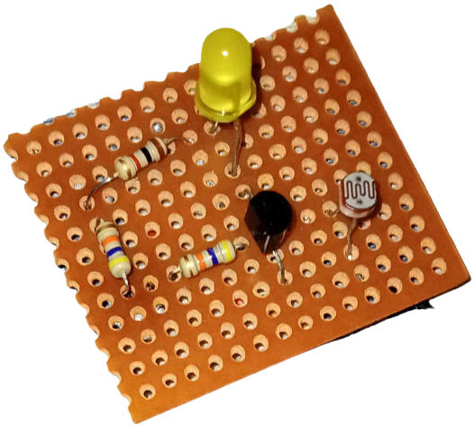
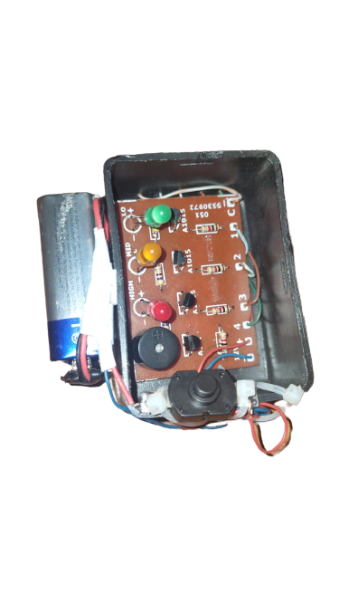
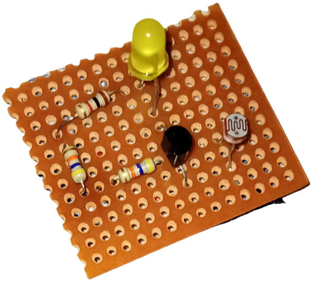

Projects
1. Water Level Indicator
using PCB:
We first designed a PCB using Proteus and then printed
the PCB, After soldering all the components on the PCB,
we attached the relevant wires and a 9V DC supply to our
circuit. It indicated different levels (Adjustable
via wire placements) of water by LED's and a buzzer.
Other creators:
Zarrar Malik, Meet him at:
LinkedIn
Saaim Jahangir Mughal, Meet him at:
LinkedIn
2. Darkness Sensor Circuit:
We used a resistor, one BC547 transistor, a LDR, and a LED bulb.
We soldered all the components on the Vero board. The circuit works by
attaching it with a 9V battery. The LED lights up when it gets dark
in its surroundings(thus, detecting Darkness) and becomes dim
when its surroundings are lit up.
This simple Project was
made as a Semester Project for Linear Circuit Analysis.
We learned about the applications of a LDR.
Other creators:
Ali Nadeem Baig
Syed Muhammad Saad Ahmed Shah
3. Wireless AC Detector:
We used three Transistors, three Resistors, a LED Bulb, a Buzzer and a 9V Battery to make this simple Project
for our Electrical Network Analysis Semester Project. We soldered the components on the Vero board
and attached the 9V Battery to supply our circuit.
We learned about Transistors working as
Switches and Amplifiers and how it can be used as detecting faults in AC current carrying
wires (small range I.e., small wired devices)
Other creators:
Ali Nadeem Baig
Syed Muhammad Saad Ahmed Shah
4. Currency Convertor-A OOP (Java) Project:
This was My Second Semester Project completed by me and my group mates.
In this Currency Converter Java Program, users will be given options to select conversion type, i.e., from one currency to another. This feature will allow users to enter numbers that will be converted (for example, Saudi Riyal) and give the converted number (for example, Pak Rupees). This program is dealing with switch statements and if-else if structure. The switch is chipping away at the input (home cash) and for yield (away money) we have utilized if-else if structure inside individual instances of a switch. Each information home money has its own case in switch. Each instance of switch contains if-else-if organized commands(statements) which check the regarded yield away money. The program additionally contains a while loop with the goal that the client might not need to run the program again for another conversion. The Program first converts the user entered home currency into Dollars and then converts Dollars into the user's desired away Currency.
The Project Source Code is available on my Github.
Other creators:
Ali Nadeem Baig
Syed Muhammad Saad Ahmed Shah
 


